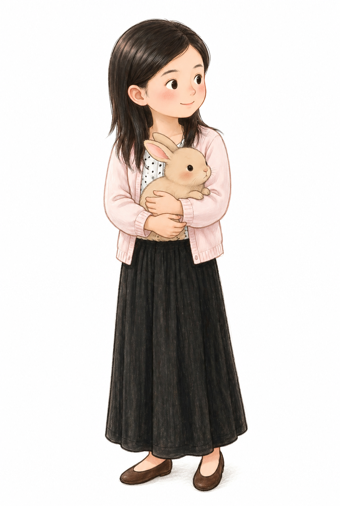

💻 起源：PTT 上的初次亮相 (1/2)
這是一切的開端。當初回台南時，在 PTT 上的自我介紹。真誠的文字與專業的背景，在短短 10 天內獲得了熱烈迴響，也開啟了舒蜜達的療癒旅程。


💻 起源：PTT 上的初次亮相 (2/2)
延續當時的熱忱，這些真摯的文字不僅吸引了第一批顧客，也奠定了舒蜜達以客為尊、用心服務的核心精神。


🗺️ 照片紀錄 (1/5) - 交通與指引

📝 舒蜜達專屬地圖
精緻可愛的手繪風格地圖，詳細標示了長榮店的確切位置（長榮路四段119巷29號）。從地圖上也能清楚看見與「學興書局」比鄰而居，呈現出緊密連結的家庭情感與在地歸屬感。
🏠 照片紀錄 (2/5) - 雙重療癒的店面

📝 書香與芳香的交會點
長榮店外觀的特色白板手繪。一邊是舒蜜達的 Spa 服務項目與優雅花草，另一邊則是學興書局的樂器與書本塗鴉。中間的「金蛇迎春」更增添了溫馨的生活感，這裡是媽媽的夢想，也是女兒的事業起點。
🃏 照片紀錄 (3/5) - 特色療程展示

📝 精油塔羅牌卡
結合身心靈探索的「精油塔羅」牌卡。透過抽牌的過程，幫助芳療師更了解客人當下的潛意識需求與心理狀態，提供超越一般物理按摩的專屬情緒療癒。
👭 照片紀錄 (4/5) - 壯大的芳療團隊


📝 陣容堅強的預約系統
從剛回台南時的一人工作室，至今預約系統上已擁有 Mia、小婷、C.C、沛瀅等多位專業芳療師。這份名單不僅是規模擴張的證明，更驗證了舒蜜達 「給予員工彈性自由」 的管理哲學，成功留住了優秀人才。
🌿 照片紀錄 (5/5) - 靜謐的療癒環境


📝 專屬的放鬆空間
溫馨、乾淨且充滿香氣的按摩空間。舒蜜達注重每一個環境細節，從柔和的燈光到舒適的按摩床，致力於為每一位來到這裡的客人，打造一個能完全卸下心防、沉澱心靈的靜謐避風港。